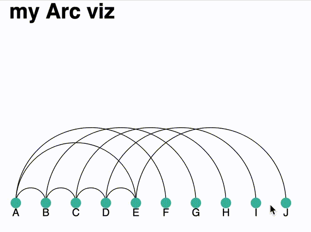

Objectif du TP
Réaliser une diagramme noeud-lien en arc similaire à celui ci-dessous.
1. Créer et positioner votre svg
On commence par définir les dimensions du svg, le créer, et le positionner.
// Definition de la taille du svg
const margin = { top: 0, right: 30, bottom: 20, left: 10 },
width = 450 - margin.left - margin.right,
height = 300 - margin.top - margin.bottom;
// ajout du svg à la 'div id="arcviz"' de page html
var svg = d3
.select("#arcviz")
.append("svg")
.attr("width", width + margin.left + margin.right)
.attr("height", height + margin.top + margin.bottom)
.append("g")
.attr("transform", "translate(" + margin.left + "," + margin.top + ")");2. Chargement des données
Les données représentant des réseaux sont typiquement divisées en deux. Un fichier représente les noeuds, un autre les liens entre les noeuds.
Pour ce TP nous allons utiliser des pseudo données de réseaux social. En d3 (et dans bien d'autres contextes), on sépare les données en deux parties d'un côté les noeuds de notre réseau, de l'autre les liens. Voici un petit extrait du jeu de données. (Pour les curieux ou les téméraires souhaitant voir un jeu de données plus "réaliste" : les relations dans GoT).
{
"nodes": [
{
"id": 1,
"name": "A"
},
{
"id": 2,
"name": "B"
},
{
"id": 5,
"name": "E"
},
],
"links": [
{
"source": 1,
"target": 2
},
{
"source": 1,
"target": 5
}
]
}Ici les deux parties sont liées par l'id du noeud.
3. Créer une échelle
Nous allons maintenant créer une échelle pour pouvoir positionner nos éléments de manière "simple". Nous allons utiliser d3.scalePoint(). Comme domaine nous allons passer un tableau du nom des noeuds à afficher (allNodes ci-dessous). Notre range sera entre 0 et width (la largeur de notre svg).
// List of node names
let allNodes = data.nodes.map(function (d) { return d.name; });let scale = d3.scalePoint().domain(allNodes).range([0, width]);3. Afficher les noeuds
Placer les noeuds de manière équidistante les un des autres (on créera un cercle svg pour chaque noeud).
Vous pourrez utiliser votre fonction d'échelle définie plus tôt, pour récupérer la position de chacun de vos noeuds.
En suivant la même logique positionner les étiquettes sous les noeuds.
4. Créer les liens
Pour dessiner des arcs, nous allons parcourir nos données de liens.
La fonction getArc ci-dessous renvoie un fragment de svg correspondant à un arc entre deux points aux coordonnées x1 et x2 (à une position en y de height - 30, libre à vous de modifier cette ligne ou cette fonction).
Pour calculer votre x1 et x2, vous pouvez vous appuyez sur la fonction d'échelle définie plus tot. Cette fonction prend le nom d'un noeud et renverra une position x correspondant. Malheureusement vos données de liens, ont seulement l'id et pas le nom. Vous pouvez rajouter un prétaitement pour créer une table de correspondance qui nous permette de connaitre un nom en fonction d'un id.
let idToNodeName = {};
data.nodes.forEach(function (n) {
idToNodeName[n.id] = n;
});On pourra ainsi récupérer les positions x1 et x2 du début et de la fin d'un arc à dessiner ce cette manière
let x1 = scale(idToNodeName[link_data.source].name);let x2 = scale(idToNodeName[link_data.target].name);function getArc(x1, x2) {
return [
"M",
x1,
height - 30, // the arc starts at the coordinate x=start, y=height-30 (where the starting node is)
"A", // A for elliptical arc
(x1 - x2) / 2,
",", // coordinates of the inflexion point. Height of this point is proportional with start - end distance
(x1 - x2) / 2,
0,
0,
",",
x1 < x2 ? 1 : 0,
x2,
",",
height - 30
].join(" ");
}5. Interactivité
En passant sur un noeud, on voudra changer le style des liens sortant/entrant. Ajouter des listeners pour réaliser ces changements, et les supprimer lorsqu'on "sort" du noeud.
La propriété stroke correspond à la couleur, la propriété stroke-width permet de modifier l'épaisseur de l'arc.
Rendu
Le rendu final est pour le 19 décembre à 23h59, via Tomuss (rendu TP4). Le TP peut se faire en binôme.